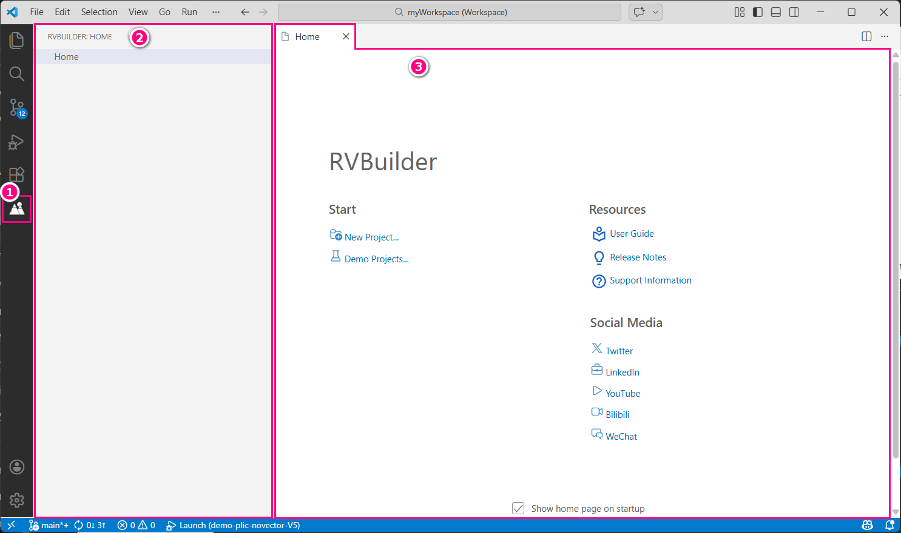
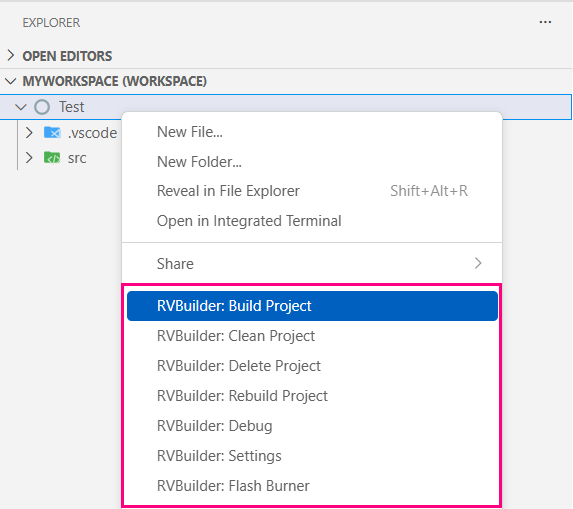
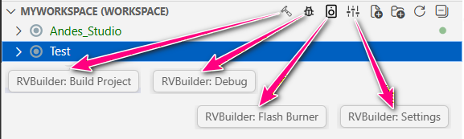
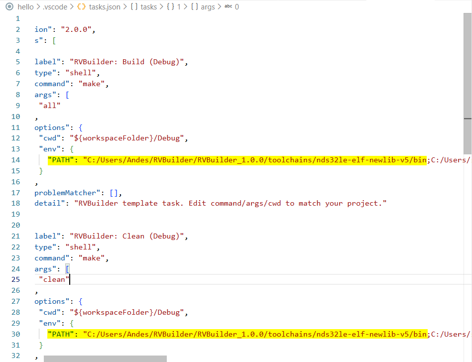
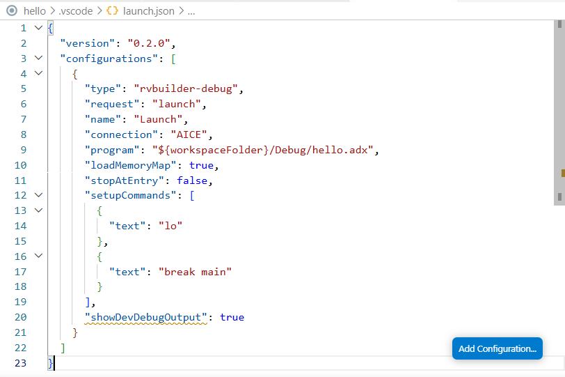

Use RVBuilder in VS Code
This section introduces the RVBuilder-specific interface and configuration file settings for development with Andes RISC-V targets, and describes the key components and tools in the RVBuilder package.
RVBuilder-Specific Interface
1. RVBuilder Icon on the Activity Bar
The RVBuilder icon serves as the entry point to the RVBuilder view.
2. RVBuilder View
This view provides access to the RVBuilder Home page.
3. RVBuilder Home Page
The RVBuilder Home page provides quick access to creating a new RVBuilder project or importing an RVBuilder demo project. It also includes links to reference documentation, technical support resources, and Andes Technology social media channels for developers who want to learn more.

4. RVBuilder Project Action Items
RVBuilder enables a set of project operations through a project's drop-down menu or the Explorer view title menu to streamline the development workflow.


| Menu Item | Description |
|---|---|
| RVBuilder: Build Project | Compiles the selected project and generates the target binary and executable. |
| RVBuilder: Clean Project | Removes all build artifacts generated during previous builds. |
| RVBuilder: Delete Project | Deletes the selected project, including the configuration and source files. |
| RVBuilder: Rebuild Project | Performs a clean operation followed by a full rebuild. |
| RVBuilder: Debug | Starts debugging the currently active file or the selected project. |
| RVBuilder: Settings | Opens the RVBuilder's Project Settings interface for configuration and modification. |
| RVBuilder: Flash Burner | Programs the generated project binary to the flash memory of a target. |
RVBuilder Settings in Workspace Configuration Files
Projects configured with RVBuilder include specialized workspace settings required for development with Andes RISC-V targets. These settings are written to VS Code workspace configuration files in the .vscode folder under the project root directory. RVBuilder either automatically generates the workspace configuration files or patches existing ones to ensure the environment is optimized for Andes RISC-V development.
Among the RVBuilder workspace settings, pay attention to the following:
Task Configuration File tasks.json
For projects that use the Makefile automatically generated by RVBuilder (that is, the option Use RVBuilder-generated Makefile is checked in the Makefile section of the project settings), the build task settings in tasks.json are synchronized with what are configured in the project settings.
However, if the project uses a custom Makefile (i.e., the option Use RVBuilder-generated Makefile is unchecked for the project), changing the project toolchain requires you to manually update the toolchain executable paths in the file. Otherwise, build errors may occur.
Note that a toolchain change is typically caused by a change in the selected chip profile. For more about toolchains in the RVBuilder package and their paths, see Toolchains.

Debug Configuration File launch.json

Most workspace settings in launch.json are generated automatically for Andes RISC-V development. By default,
- the launch
typeis set torvbuilder-debug. - the
connectiontype is aligned with the connection selected in the project settings. - the
programpath is set to the program executable under${PROJECT_ROOT}/Debug/. - the
loadMemoryMapoption is set totrue, which loads the program executable according to the memory regions defined in the selected chip profile. To load the program executable without applying the predefined memory mapping, set this option tofalse.
To further customize debugger behavior, use the following options:
stopAtEntrycontrols whether to halt execution at the program entry point when the debug session starts.setupCommandsspecifies debugger commands that are executed automatically at the start of the debug session.
Components and Tools
RVBuilder includes a set of components and tools that support the complete software development workflow for Andes RISC-V targets. The package provides predefined configurations and utilities required throughout development, including target configuration files (Chip Profiles), toolchains, the Linker Script Generator (LdSaG), and flash burners. It also includes demo applications to illustrate the typical development workflows.
The integration of these components within VS Code enables you to manage build, run and debug workflows through a unified interface, eliminating the need for manual installation and configuration of individual components for the development.
The following provide brief introduction to the key components and tools in the RVBuilder package.
Chip Profiles
Chip profiles describe the specifications and software configuration of target platforms. RVBuilder provides a set of predefined chip profiles for Andes RISC-V targets. Each chip profile contains the required software settings for the corresponding target, such as
- the preferred toolchain
- compiler, linker, and assembler options specific to the target core
- target connection configuration and related arguments
When creating or configuring a project with RVBuilder, select an appropriate chip profile to match the intended target and take note of the chip profile naming convention when making a selection.
The chip profiles follow the naming format:
ADP-<PLATFORM>-<CORE>-<SUFFIX>
ADPstands for Andes Development Platform. It is used as the prefix for Andes target configurations.<PLATFORM>refers to an AndeShape™ platform. Supported platforms include AE350 and Corvette-F1. For more information, see AndeShape™ Platforms.<CORE>refers to a 32-bit or 64-bit AndesCore™ processor core. The RVBuilder package supports a variety of AndesCore processor series designed for different applications. For more information, see AndesCore™ Processors.-
<SUFFIX>denotes additional features or configurations of the target. Supported suffixes include:RVB— Bit-manipulation extension enabledSE— Security processor configuration1C— Single-core configuration of a multi-core targetSMP— Symmetric multiprocessing configuration for multi-core targets
Examples of chip profiles within the RVBuilder Package include ADP-AE250-N25F, ADP-AE350-NX45-RVB, ADP-AE350-AX46MPV-SMP and more.
Toolchains
The RVBuilder package provides two toolchains, nds32le-elf-newlib-v5 and nds64le-elf-newlib-v5, for software development on Andes RISC-V targets. Both toolchains are based on GNU and LLVM, and support the standard options of GCC, as, and ld, as well as clang and lld. In addition, they support compiler, assembler, and linker options specialized for Andes RISC-V targets, enabling features such as performance tuning and code size optimization. For details on these Andes-specific compiler, assembler, and linker options, see Andes Programming Guide.
Take note of the denotations in toolchain naming:
nds32/nds64indicates the supported processor architecture.nds32for 32-bit Andes RISC-V processors andnds64for 64-bit Andes RISC-V processors.leindicates that the supported target endianness is little-endian.elfindicates the output binary format used by the compiler, assembler, and linker.newlibindicates that the toolchain provides the Newlib support and can be compiled with either the GCC or LLVM compiler.v5indicates that the toolchain targets the AndeStar™ Instruction Set Architecture (ISA) V5 implementation.
The appropriate toolchain for a specific Andes target is predefined in the associated chip profile and does not require manual selection. However, for RVBuilder projects that use a custom Makefile, you must update the target-related settings and toolchain paths in tasks.json if changing to use a target (chip profile) with a different architecture (e.g. changing from 32-bit to 64-bit). The toolchain executable path is located at ${RVBUILDER_PACKAGE_ROOT}/toolchains/${TOOLCHAIN}/bin/.
Linker Script Generator
The Linker Script Generator (LdSaG) is a tool that generates a linker script from a simplified image layout and memory mapping description file written in Andes Scattering-and-Gathering (SaG) format. Instead of writing complex GNU linker scripts, you can use the SaG syntax to describe the program image layout and memory mapping for Andes RISC-V targets. With the SaG-formatted description file (*.sag), the LdSaG tool generates a corresponding linker script.
For details about the SaG syntax and the command-line options for the LdSaG tool, see the chapter Linker Script Generation in Andes Programming Guide.
Flash Burners
RVBuilder supports the following approaches to perform in-system programming on Andes RISC-V ICE targets (i.e., AndeShape development platforms connecting to a local or remote debugging host via AICE or Maverick. See Supported Targets).
-
Flash Burn requires a flash burner,
PAR_burnorSPI_burn, to communicate with the ICE driver (e.g. ICEman) using socket protocols. ThePAR_burnutility programs parallel flash, while theSPI_burnutility programs SPI flash. -
Target Burn requires the flash burner
target_burn_frontendto communicate with the ICE driver (e.g. ICEman) using telnet protocols, along with a target application to program the flash memory directly. RVBuilder provides the target burn applicationtarget_SPI_v5_32.binfor programming the flash on Andes 32-bit RISC-V targets andtarget_SPI_v5_64.binfor Andes RISC-V 64-bit targets. Compared with the Flash Burn approach, this approach accelerates the programming process.
The flash burners and target applications required for the above two programming approaches are included in the RVBuilder package. Their locations are as follows:
- Flash burner for Flash Burn or Target Burn (
PAR_burn,SPI_burnandtarget_burn_frontend):${RVBUILDER_PACKAGE_ROOT}/RVBuilder_1.0.0/flash/bin/. - Target application for the Target Burn method (
target_SPI_v5_32.binortarget_SPI_v5_64.bin):${RVBUILDER_PACKAGE_ROOT}/RVBuilder_1.0.0/flash/target_bin/.
Demo Applications
The RVBuilder package provides two demo applications, demo-plic-novector-V5 and freertos-V5, to verify the development environment setup and demonstrate the typical development workflows.
Non-vectored PLIC Related Interrupt Demo
The demo-plic-novector-V5 demo demonstrates how to activate the following machine interrupts and interrupts related to machine interrupts and PLIC (Platform-Level Interrupt Controller) interrupts:
- Machine timer (mtime) interrupt: The interrupt interval is set to two seconds. In the event that the machine timer interrupt occurs, the handler sets the machine timer flag and the machine software trigger flag.
- PLIC Programmable Interrupt Timer (PIT) interrupt: The interrupt interval is set to 200 milliseconds. In the event of a PLIC PIT interrupt, the handler sets the PLIC PIT timer flag and the machine software trigger flag.
- Machine software interrupt: This interrupt is activated by the machine timer or PLIC PIT interrupt. A UART message is then output periodically (every two seconds/200 milliseconds) to indicate that the machine timer or PLIC PIT is alive.
The main function of the application checks the machine software trigger flag to determine whether to trigger a machine software interrupt.
The output message of this demo application is as follows:
Andes V5 demo-plic-novector program
Message triggered from PLIC PIT interrupt
Message triggered from PLIC PIT interrupt
Message triggered from PLIC PIT interrupt
Message triggered from PLIC PIT interrupt
Message triggered from PLIC PIT interrupt
Message triggered from PLIC PIT interrupt
Message triggered from PLIC PIT interrupt
Message triggered from PLIC PIT interrupt
Message triggered from PLIC PIT interrupt
Message triggered from machine time interrupt
Message triggered from PLIC PIT interrupt
Message triggered from PLIC PIT interrupt
..
..
FreeRTOS Demo Applications
The freertos-V5 demo in the RVBuilder package includes two standard FreeRTOS applications: Blinky and Full.
Blinky Demo
The Blinky demo includes two tasks, one software timer, and one queue. One task in conjunction with the software timer repeatedly sends values of 100 and 200 to the other task via the queue. The sending task writes to the queue every 200 milliseconds and the software timer writes to the queue every 2 seconds. The receiving task prints a message to the UART port each time it receives the values.
The output message of this demo application is as follows:
Blinky Demo
Message received from task
Message received from task
Message received from task
Message received from task
Message received from task
Message received from task
Message received from task
Message received from task
Message received from task
Message received from software timer
Message received from task
Message received from task
Message received from task
Full Demo
The Full demo has strong real-time requirement and therefore is only supported on ICE targets. It tests the RTOS port and illustrates the following:
- Creation of RTOS objects using statically and dynamically allocated memory
- Direct to task notifications
- Event groups
- Software timers
- Queues
- Semaphores
- Mutexes
In addition to these standard tasks, two other tasks are also included in the demo.
- Register test task: Tests the RTOS context-switch mechanism by filling each Andes CPU register (including floating point registers) with a known, unique value, and repeatedly verifying that the original value remains unchanged in the register throughout the lifetime of the task.
- Check task: Queries standard demo tasks and register test tasks periodically (every 5 seconds) to ensure they are functioning as intended. It then prints a status message to the UART port.
The output message of this demo application is as follows:
Full Demo
Pass, status code = 0, tick count = 5000
Pass, status code = 0, tick count = 10000
Pass, status code = 0, tick count = 15000
Pass, status code = 0, tick count = 20000
Pass, status code = 0, tick count = 25000
Pass, status code = 0, tick count = 30000
Pass, status code = 0, tick count = 35000
Pass, status code = 0, tick count = 40000
Pass, status code = 0, tick count = 45000
Pass, status code = 0, tick count = 50000
Pass, status code = 0, tick count = 55000
Pass, status code = 0, tick count = 60000